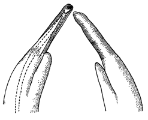

Fiddler Crabs
Uca bengali
Bengal Fiddler Crab
Type
Information
Photos
Video
Art
References
Species List
Type Description
Uca triangularis bengali
Crane, J. (1975)
Fiddler Crabs of the World: Ocypodidae: Genus Uca
. Princeton, NJ: Princeton University Press.
Information
Subgenus
Austruca
Common Names
Bengal Fiddler Crab
Synonyms, Alternate Spellings, & Name Forms
Uca (Celuca) triangularis bengali
,
Uca (Paraleptuca) bengali
,
Uca bengali
,
Uca triangularis bengali
Geographic Range
Indo-West Pacific: Eastern India, Burma, Thailand, Western Malaysia, Indonesia (Sumatra)
Download SVG line map of ranges.
Map data derived from:
Chakraborty & Choudhury (1985)
;
Crane (1975)
;
Krishnan (1992)
;
Rao
et al.
(1985)
External Links
Encyclopedia of Life
Wikipedia
iNaturalist
NCBI Taxonomy Browser/Genbank
GBIF
Photos
No pictures available at this time.
Video
No videos available at this time.
Art

References
Alcock, A. (1900) Materials for a carcinological fauna of India No. 6. The Brachyura Catometopa, or Grapsoidea.
Journal of the Asiatic Society of Bengal
64(3. Part 2):279–456.
Altevogt, R. (1957) Untersuchungen zur Biologie, Ökologie und Physiologie Indischer Winkerkrabben.
Zeitschrift für Morphologie und Ökologie der Tiere
46(1):1–110.
Altevogt, R. (1959) The love and life of fiddler crabs.
Journal of the Bombay Natural History Society
56(1):1–7.
Altevogt, R. (1959) Ökologische und ethologische Studien an Europas einziger Winkerkrabbe
Uca tangeri
Eydoux.
Zeitschrift für Morphologie und Ökologie der Tiere
48(2):123–146.
Altevogt, R. (1964) Ein antiphoner Klopfkode und eine neue Winkfunktion bei
Uca tangeri
.
Naturwissenschaften
51(24):644–645.
Altevogt, R. (1972) Physiological inter-relations of display and locomotion in fiddler crabs: An evolutionary aspect.
Journal of the Marine Biological Association of India
14(2):456–467.
Beinlich, B., and H.-O. von Hagen (2006) Materials for a more stable subdivision of the genus
Uca
Leach.
Zoologische Mededelingen
80(4):9–32.
Chopra, B., and K.N. Das (1937) Further notes on Crustacea Decapoda in the Indian Museum.
Records of the Indian Museum
39:377–434.
Crane, J. (1975)
Fiddler Crabs of the World: Ocypodidae: Genus Uca
. Princeton, NJ: Princeton University Press.
De Man, J.G. (1887–1888) Report on the Podophthalmous Crustacea of the Mergui Archipelago, collected for the trustees of the Indian Museum, Calcutta, by Dr. John Anderson, F.R.S., superintendant of the museum.
Journal of the Linnean Society. Zoology
22:1–305.
De Man, J.G. (1895) Bericht über die von Herrn Schiffscapitän Storm zu Atjeh, an den westlichen Küsten von Malakka, Borneo und Celebes sowie in der Java-See gesammelten Decapoden und Stomatopoden.
Zoologische Jahrbücher. Abtheilung für Systematik, Geographie und Biologie der Thiere
8(4):485–609.
Estampador, E.P. (1959) Revised check list of Philippine crustacean decapods.
Natural & Applied Sci. Bull. Coll. Liberal Arts, Univ. of Philippines
17(1):100–103.
Feest, J. (1969) Morphophysiologische Untersuchungen zur Ontogenese und Fortpflanzungsbiologie von
Uca annulipes
und
Uca triangularis
mit Vergleichsbefunden an
Ilyoplax gangetica
.
forma et functio
1:159–225.
Frith, D.W., and C.B. Frith (1977) Range extensions of fiddler crabs (Decapoda, Brachyura, Ocypodidae) in the north-western Malay Peninsula area.
Crustaceana
32(1):100–102.
Frith, D.W., R. Tantanasiriwong, and O. Bhatia (1976) Zonation and abundance of macrofauna on a mangrove shore, Phuket Island.
Phuket Marine Biological Center Research Bulletin
10:1–37.
Heller, C. (1865) Die Crustaceen. Pp. 1–280 in
Reise der österreichischen Fregatte "Novara" um die Erde in den Jahren 1857-1859 unter den Befehlen des Commodore B. von Wüllerstorf-Urbair. Zoology
, Volume 2. Vienna
Henderson, J.R. (1893) A contribution to Indian carcinology.
Transactions of the Linnean Society of London. Second Series. Zoology
5(10):325–458.
Jansen, P. (1970) Phsyiologisch-ökologische Untersuchungen zum "Posen" von
Uca tangeri
.
forma et functio
2:58–100. {Eco-physiological studies on the "posing" behavior of
Uca tangeri
}
Lundoer, S. (1974) A checklist of the Brachyura in the reference collection at PMBC, Thailand.
Phuket Marine Biological Center Research Bulletin
4:1–11.
Maccagno, T. (1928) Crostacei Decapodi. Le specie del genere
Uca
Leach conservate nel Regio Museo Zoologico di Torino.
Bollettino dei Musei di Zoologia ed Anatomia comparata della R. Università di Torino
41(11):1–52.
Naderloo, R., M. Türkay, and H.-L. Chen (2010) Taxonomic revision of the wide-front fiddler crabs of the
Uca lactea
group (Crustacea: Decapoda: Brachyura: Ocypodidae) in the Indo-West Pacific.
Zootaxa
2500:1–38.
Nobili, G. (1903) Crostacei di Pondichéry, Mahé, Bombay etc.
Bollettino dei Musei di Zoologia ed Anatomia comparata della R. Università di Torino
18(452):1–24.
Ortmann, A.E. (1894) Die Decapoden-Krebse des Strassburger Museums, mit besonderer Berücksichtigung der von Herrn Dr. Döderlein bei Japan und bei den Liu-Kiu-Inseln gesammelten und zur Zeit im Strassburger Museum aufbewahrten Formen. VIII. Abtheilung: Brachyura (Brachyura genuina Boas) III. Unterabtheilung: Cancroidea, 2. Section: Canerinea, 2. Gruppe: Catametopa.
Zoologische Jahrbücher. Abtheilung für Systematik, Geographie und Biologie der Thiere
7(5):683–772.
Panikkar, N.K., and R.G. Aiyar (1937) The brackish-water fauna of Madras.
Proceedings of the Indian Academy of Sciences
6B(5):284–337.
Salmon, M. (1965) Waving display and sound production in the courtship behavior of
Uca pugilator
, with comparisons to
U. minax
and
U. pugnax
.
Zoologica NY
50:123–150.
Sarojini, S. (1966) Biometrical comparison of
Uca annulepis
and
Uca triangularis
.
Proceedings of the All-India Congress of Zoology
1962(2):274–275.
von Hagen, H.-O. (1970) Anpassungen an das spezielle Gezeitenzonen-Niveau bei Ocypodiden (Decapoda, Brachyura).
forma et functio
2:361–413. {Adaptations to the special intertidal level of habitat in Ocypodid crabs (Decapoda, Brachyura)}
Walker, I. (1972) Habituation to disturbance in the fiddler crab (
Uca annulipes
) in its natural environment.
Animal Behaviour
20(1):139–146.
{kind=link}